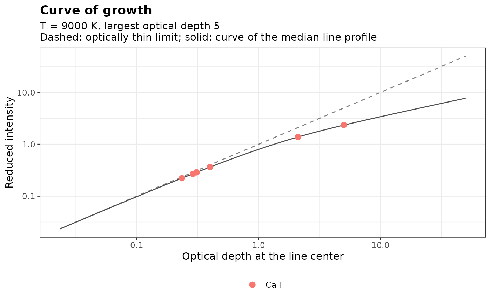

Fits the curve of growth of a homogeneous plasma in local thermodynamic equilibrium (LTE) to the intensities of emission lines, and returns the optical depth and the self-absorption coefficient of each line, with the intensity it would have if the plasma were optically thin.
Arguments
- lines
A data frame with one row per line and columns
species(such as"K I"),intensity(integrated intensity, corrected for the spectral response),wavelength(nm),Aki(s\(^{-1}\)),gk,EkandEi(upper and lower level energies, eV) andstark_width(the Stark full width at half maximum, nm).- temperature
The plasma temperature, in K.
- units
The units of
intensity:"energy"(default) or"photons", as inboltzmann().
Value
lines, as a tibble of class specproc_curve_of_growth, with
the measured_intensity, the Doppler width (doppler_width, nm), the
optical_depth at the line center, the self-absorption coefficient
SA, the corrected intensity (\(I / SA\)) and the residual of the
fit (on the logarithm of the intensity). The attributes hold the
temperature, the units, the fitted scale (\(F\)), the
column_density of each species (a tibble), and the root mean square
residual rmse. Draw it with plot_curve_of_growth().
Details
In a homogeneous plasma of length \(l\) in LTE, the integrated intensity of a line is $$I = F\, B_\lambda(T) \int \left(1 - e^{-\tau_0 V(\lambda) / V(\lambda_0)}\right) d\lambda$$ where \(B_\lambda(T)\) is the Planck function, \(F\) a factor of the instrument and of the geometry, common to all lines, \(V\) the line profile and \(\tau_0\) the optical depth at the line center, $$\tau_0 = S\, \lambda^4 g_k A_{ki}\, e^{-E_i / k_B T} \left(1 - e^{-hc / \lambda k_B T}\right) V(\lambda_0)$$ The column density \(S\), proportional to the number density of the species times \(l\) over its partition function, is the same for all lines of a species. When the plasma is optically thin, the intensity grows as \(\tau_0\) (it is the intensity of a Boltzmann plot); as \(\tau_0\) grows, the line center saturates and the intensity grows only as \(\sqrt{\tau_0}\) (Lorentzian wings) or slower. This is the curve of growth of Gornushkin et al. (1999), and the model of the C-sigma graphs of Aragón and Aguilera (2014), with one column density per species, since their concentrations are unknown.
The profile is a Voigt profile of the Stark (Lorentzian) width of each
line, stark_width, and of its Doppler (Gaussian) width at the
temperature (see doppler_width()). The instrumental broadening, which
does not change the optical depth, must not be included: take the
Lorentzian width of a Voigt fit with the instrumental width held fixed
(see peak_fit()), or the Stark width at the electron density of the
plasma (see stark_width()). Self-absorption broadens lines, so the
widths of strongly absorbed lines should come from the Stark parameters.
The factor \(F\) and the column densities are fitted by least squares
on the logarithms of the intensities (weighted by their relative standard
errors when the lines have a column intensity_se). The optical depths
are determined by the curvature of the intensities: lines of different
optical depths, such as resonance and non-resonance lines, are needed,
and a species whose lines are all thin keeps a column density near the
lower bound, with coefficients close to 1. The self-absorption
coefficient is \(SA = I / I_{thin}\), the ratio of the intensity to
that of an optically thin plasma (as in self_absorption()), and the
corrected intensities, \(I / SA\), go to boltzmann() or
cf_libs().
References
Aragón, C., Aguilera, J.A. (2014). CSigma graphs: a new approach for plasma characterization in laser-induced breakdown spectroscopy. Journal of Quantitative Spectroscopy and Radiative Transfer, 149:90-102.
Gornushkin, I.B., Anzano, J.M., King, L.A., Smith, B.W., Omenetto, N., Winefordner, J.D. (1999). Curve of growth methodology applied to laser-induced plasma emission spectroscopy. Spectrochimica Acta Part B, 54(3-4):491-503.
Examples
# simulated lines of a species: two resonance lines (Ei = 0), strongly
# absorbed, and four lines from excited levels
lines <- data.frame(
species = "Ca I", wavelength = c(400, 405, 520, 560, 610, 650),
Aki = c(1.5e8, 1.2e8, 3e7, 5e7, 4e7, 2e7), gk = c(4, 2, 6, 4, 3, 5),
Ei = c(0, 0, 2.0, 2.1, 2.2, 2.4), stark_width = 0.02
)
lines$Ek <- lines$Ei + 1239.842 / lines$wavelength
# their intensities in a plasma where the strongest line has an optical
# depth of 5 at its center
truth <- curve_of_growth_model(lines, temperature = 9000, scale = 1e20, optical_depth = 5)
truth
#> # A tibble: 6 × 5
#> wavelength optical_depth SA intensity thin_intensity
#> <dbl> <dbl> <dbl> <dbl> <dbl>
#> 1 400 5 0.472 13978. 29619.
#> 2 405 2.10 0.660 8108. 12293.
#> 3 520 0.310 0.927 1208. 1304.
#> 4 560 0.399 0.907 1336. 1473.
#> 5 610 0.289 0.931 839. 901.
#> 6 650 0.235 0.943 603. 640.
lines$intensity <- truth$intensity
cog <- curve_of_growth(lines, temperature = 9000)
cog[c("wavelength", "optical_depth", "SA")]
#> Curve of growth (6 lines, T = 9000 K; RMS residual 6.66e-09 in log intensity)
#>
#> species column_density n_lines max_optical_depth
#> Ca I 1.074e-20 6 5
#>
#> # A tibble: 6 × 3
#> wavelength optical_depth SA
#> <dbl> <dbl> <dbl>
#> 1 400 5.00 0.472
#> 2 405 2.10 0.660
#> 3 520 0.310 0.927
#> 4 560 0.399 0.907
#> 5 610 0.289 0.931
#> 6 650 0.235 0.943
plot_curve_of_growth(cog)

# the corrected intensities lie on the Boltzmann plot
boltzmann(cog)
#> Boltzmann plot (6 lines)
#>
#> Temperature: 9000 +/- 0 K
#> R-squared: 1